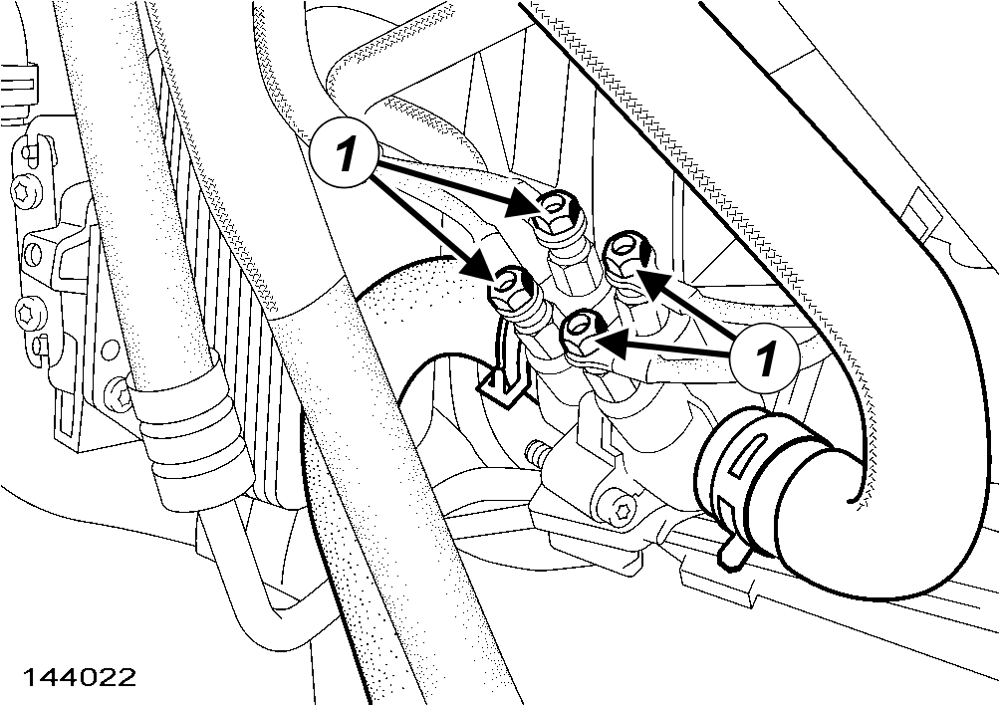
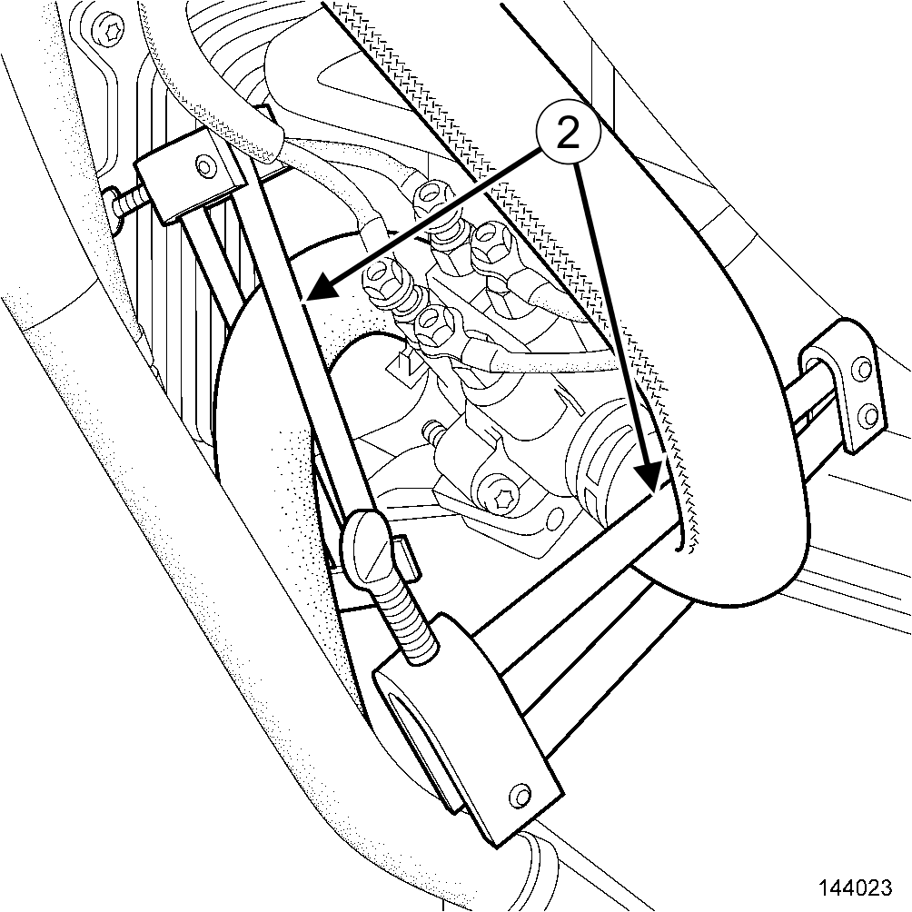
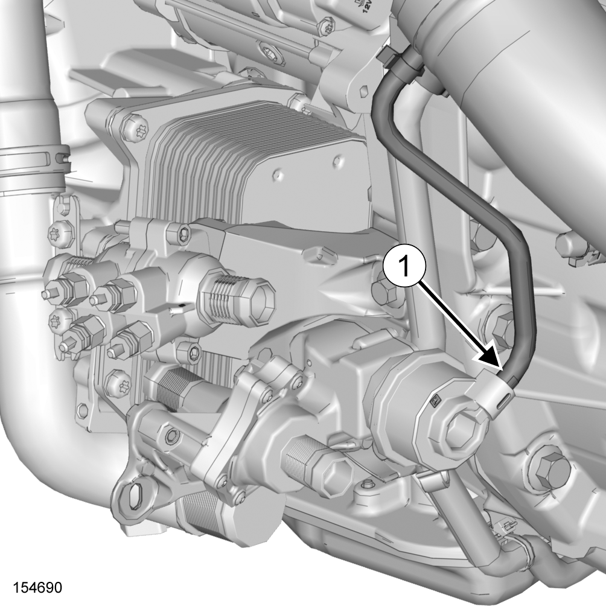
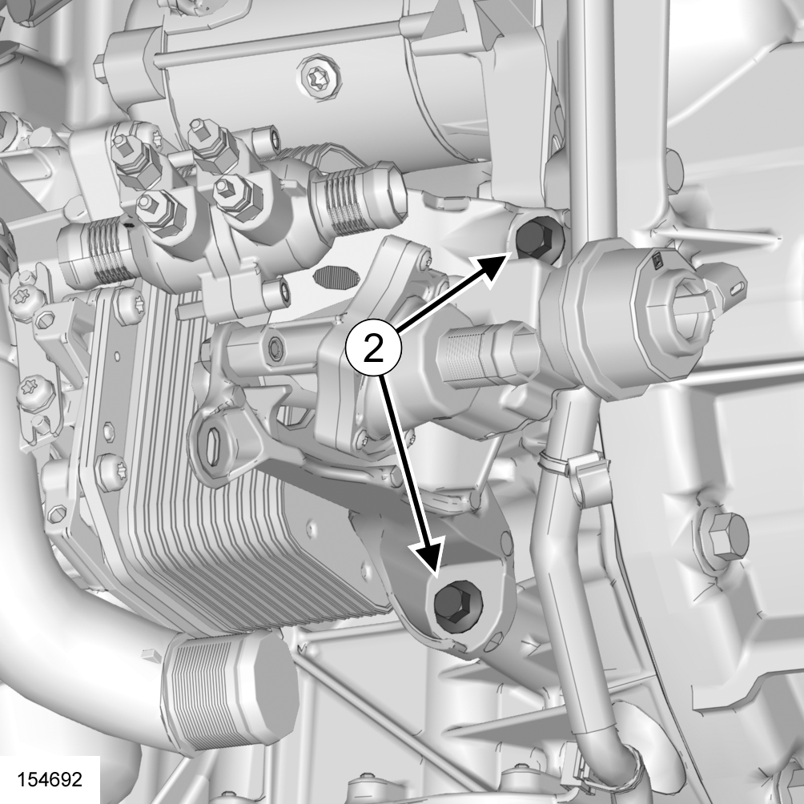
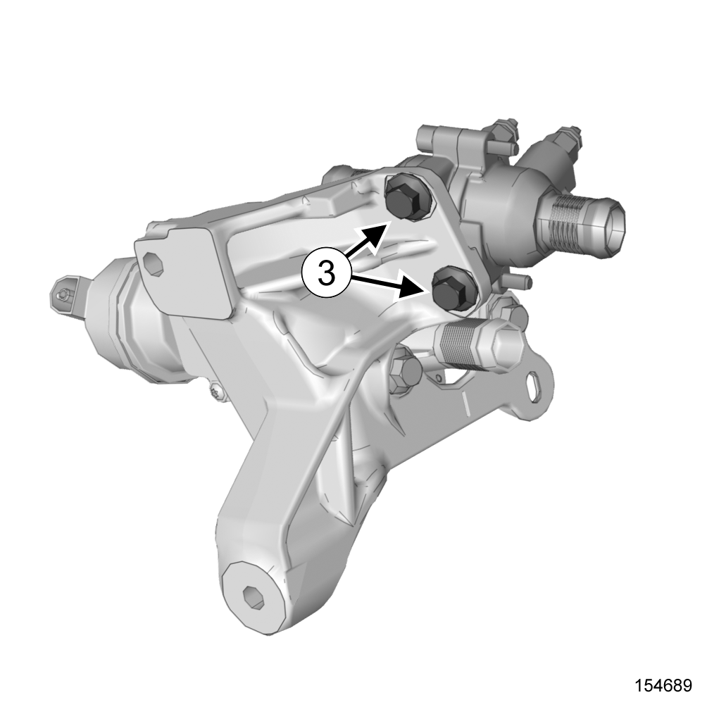
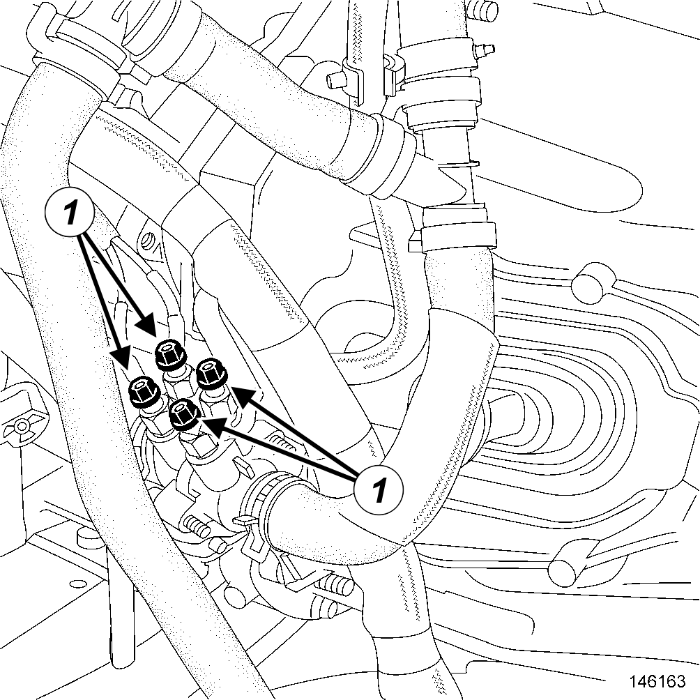
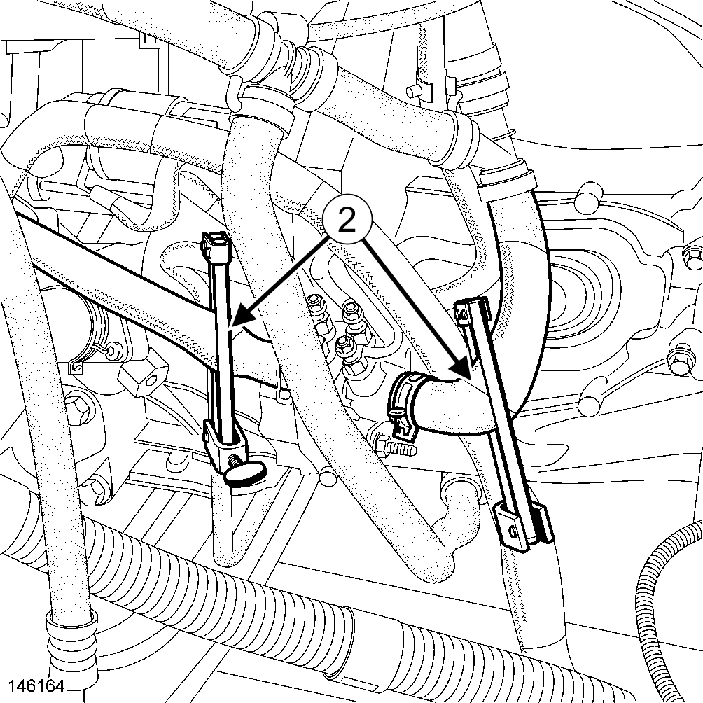
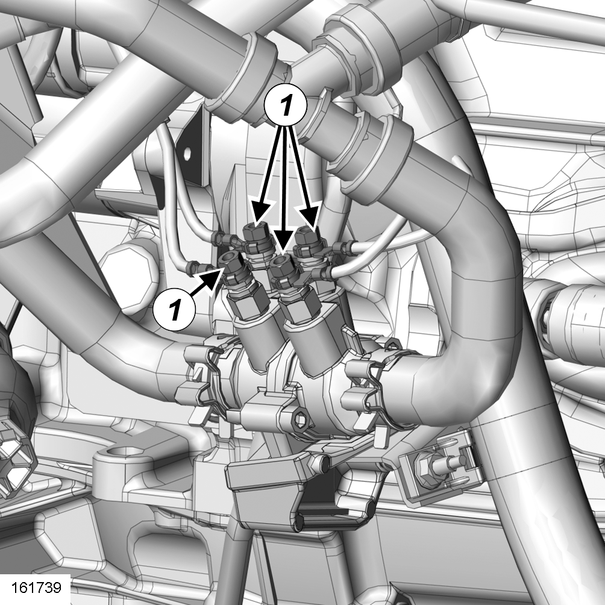
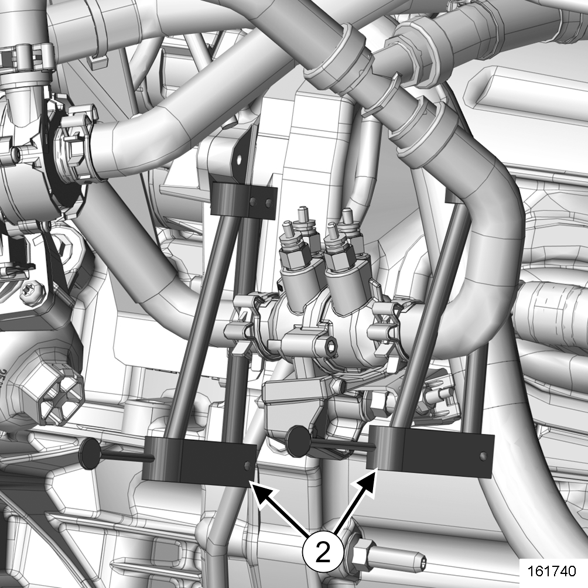
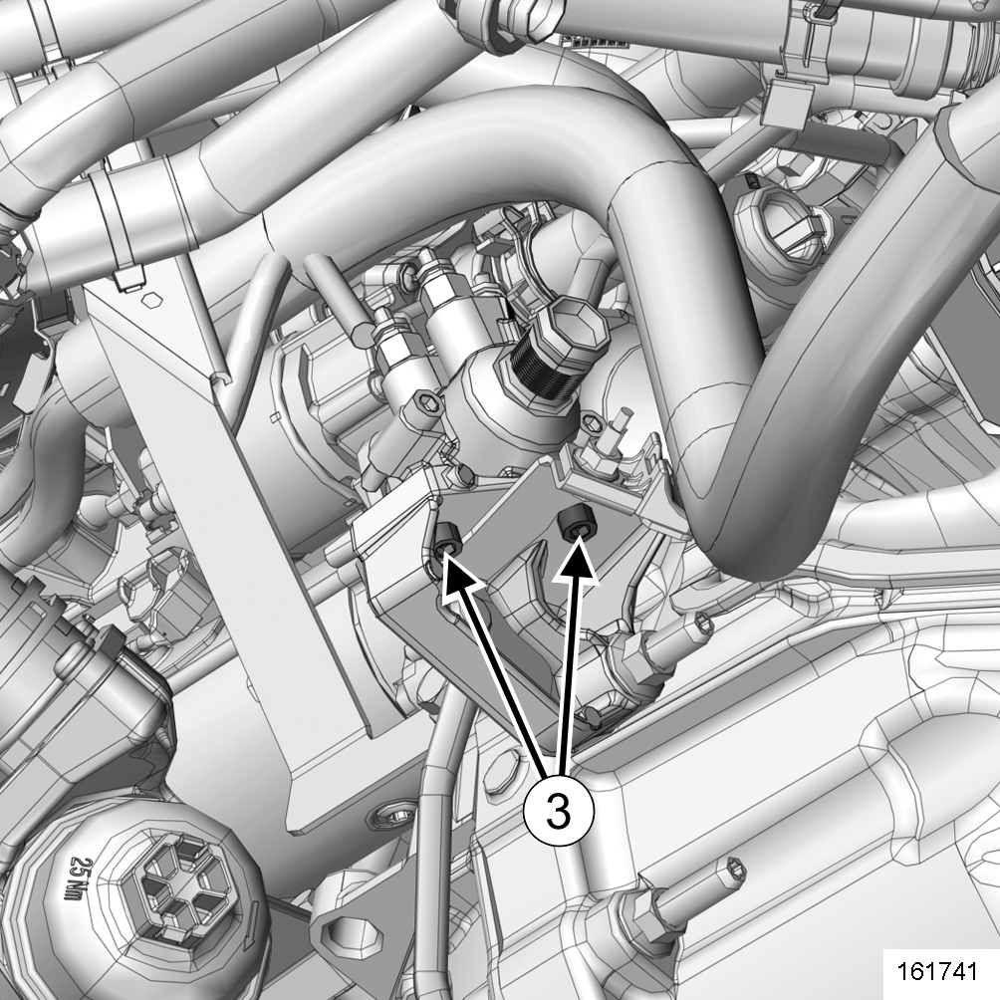

heating element support unit : removal - refitting
INTRODUCTION
Location and specifications (tightening torques, parts always to be replaced, etc.)(see, coolant circuit assembly : exploded view ).
| WARNING |
When working in the engine compartment, take care as the radiator fan(s) may start up unexpectedly (risk of being cut).
To avoid any risk of serious burns when the engine is hot:
- do not open the expansion bottle cap,
- do not drain the cooling system,
- do not open the bleed screw(s).
| CAUTION |
Prepare for the flow of fluid, and protect the surrounding components.
removal
removal preparation operation
- Position the vehicle on a two-post lift(see, vehicle : towing and lifting )(02A, Lifting equipment).
- Disconnect the battery(see, 12 V battery : removal - refitting )(80A, Battery).
- Remove the engine undertray.
- Drain the cooling system(see, coolant circuit assembly : draining - refilling ).
| X62/M9T/870 |
removal operation
- Remove the nuts(1)on the thermoplunger unit wiring.
- Move aside the thermoplunger unit wiring.

- Fit toolsPipe clamps. (Ms. 583)on the thermoplunger unit cooling pipes(2).

- Move aside using the toolRemote operation pliers for hose clips. (Mot. 1448) (see, coolant circuit assembly : exploded view ):
- the thermoplunger unit inlet cooling pipe clip,
- the thermoplunger unit outlet cooling pipe clip.
- Disconnect(see, coolant circuit assembly : exploded view ):
- the thermoplunger unit inlet cooling pipe,
- the thermoplunger unit outlet cooling pipe.
- Remove(see, coolant circuit assembly : exploded view ):
- the thermoplunger unit bolts,
- the thermoplunger unit.
removal operation
- Remove the thermoplunger unit wiring nuts.
- Move aside the thermoplunger unit wiring.
- Move aside using the toolRemote operation pliers for hose clips. (Mot. 1448) (see, coolant circuit assembly : exploded view ):
- the thermoplunger unit inlet cooling pipe clip,
- the thermoplunger unit outlet cooling pipe clip.
- Disconnect(see, coolant circuit assembly : exploded view ):
- the thermoplunger unit inlet cooling pipe,
- the thermoplunger unit outlet cooling pipe.
- Separate the following from the coolant circuit switchover valve using the toolRemote operation pliers for hose clips. (Mot. 1448):
- the coolant circuit switchover valve inlet cooling pipe,
- the coolant circuit switchover valve outlet cooling pipe.
- Disconnect the following from the coolant circuit switchover valve:
- the coolant circuit switchover valve inlet cooling pipe,
- the coolant circuit switchover valve outlet cooling pipe,
- the control pipe from the coolant circuit switchover valve(1).

- Remove the retaining bolt of the hydraulic pipe.
- Move the hydraulic pipe.
- Remove:
- the "coolant circuit switchover valve - thermoplunger unit" assembly bolts(2),
- the "coolant circuit switchover valve - thermoplunger unit" assembly.

- Remove:
- the thermoplunger unit bolts(3),
- the thermoplunger unit.

removal operation
- Remove the nuts on the thermoplunger unit wiring.
- Move aside the thermoplunger unit wiring.

- Fit toolsPipe clamps. (Ms. 583)on the thermoplunger unit cooling pipes(2).

- Disconnect(see, coolant circuit assembly : exploded view ):
- the thermoplunger unit inlet cooling pipe,
- the thermoplunger unit outlet cooling pipe.
- Remove(see, coolant circuit assembly : exploded view ):
- the thermoplunger unit bolts,
- the thermoplunger unit.
removal operation
- Remove the thermoplunger unit wiring nuts(1).
- Move aside the thermoplunger unit wiring.

- Fit toolsPipe clamps. (Ms. 583)on the thermoplunger unit cooling pipes(2).

- Move aside using the toolRemote operation pliers for hose clips. (Mot. 1448) (see, coolant circuit assembly : exploded view ):
- the thermoplunger unit inlet cooling pipe clip,
- the thermoplunger unit outlet cooling pipe clip.
- Disconnect(see, coolant circuit assembly : exploded view ):
- the thermoplunger unit inlet cooling pipe,
- the thermoplunger unit outlet cooling pipe.
- Remove:
- the thermoplunger unit bolts(3),
- the thermoplunger unit.
